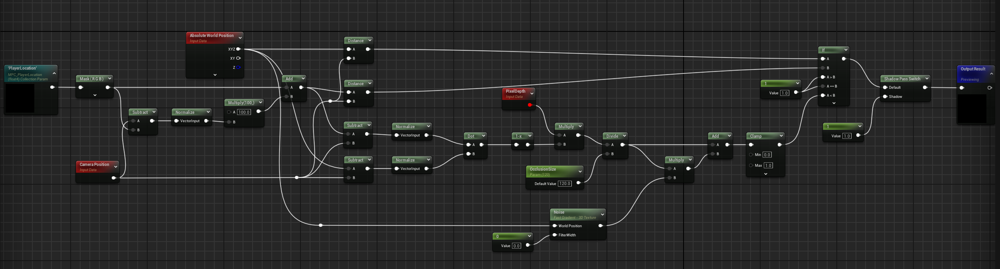
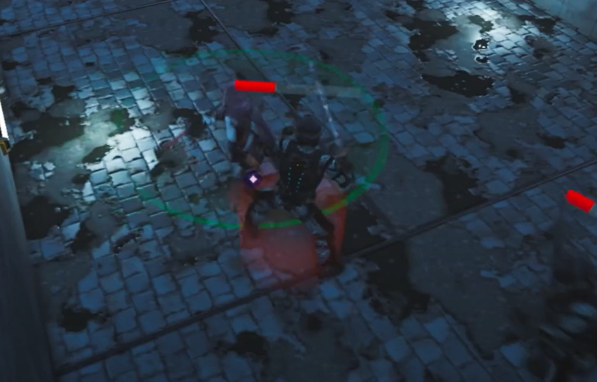

Works
Echo of The Past
Portfolio
About
The keywords I received for this project meant to direct my design choice were "future" and "resource management". Starting from there, I created a game that focuses on combat. However, to better integrate the theme assigned to me, I had to add a twist to it. I decided to go in the RPG direction, making this game's genre combat RPG.
Despite this project being part of an university course, I decided to keep working on it even after the deadline, making it a personal project instead.
Trailer
What I did
From the combat system to the animation implementation, I wrote all the logic needed for the game. Other than that, I also designed the entire game, wrote the narrative, and created the UI.
Perspective challenges
The combat changes become quite difficult to program when you take perspective into account. My inspiration for this combat style was Crosscode, which is a 2D game. But in 3D space, when you rotate the camera view around, your radius range changes drastically if it's, for example, sitting on the ground. The cursor will never point where you want either, and ranged attacks will never hit. This is why a simple visibility raycast won't do.
So, how did I do it?
Using a custom trace channel that only hits one plane going through the player's middle, I was able to set the cursor icon's location on that one plane (that is invisible and has no other colliders). Therefore, I was able to increase the accuracy for aiming by a lot.

However, one issue still remains. How would the player know whether he's using melee or ranged before attacking?
That's where the melee radius comes into play. Just as the cursor plane, the melee radius runs through the middle of the player. Using a custom material with a texture and messing with the custom stencil settings I was able to replicate something that looks more decent than it does hacky. Though that does mean I had to limit the main camera's rotation range for it to keep looking good.


But what happens when there are objects between the camera and the player?
Initially I tried using a plugin to ease my workload. However, it created more issues than it solved. It would fade entire meshes when one part of the mesh was in the way, sometimes fading the floor or ceiling. It would also cause random crashes.
Seeing I had no other choice, I took the matter in my own hands.
I wrote a material function that sets the opacity mask's value to 0 whenever a point is in between the camera and the character. I added a slight offset to prevent the objects directly next to the player from getting obstructed.

I then wrote a python script that connects the material function to the opacity mask node for all opaque materials and changes their blend mode to masked. For objects already masked, I multiplied the initial material's opacity mask with my material function.
This is the result.
.png)
.png)
Weapons
I offer a variety of different weapons within my game, all with different stats. There are a total of 8 guns and 8 melee weapons, the guns sharing 3 different projectile types.


Upon having picked up a new weapon, the old weapon is dropped and can be picked up again. The stats of the weapons on the ground change when the player has a weapon of the same type equipped, showing extra ques to whether the stats are better, worse, or the same.


Damage System
As observed, all weapons have a crit rate, speed/fire rate, attack. The fire rate is how fast a gun can shoot repeatedly, while the speed for melee is how fast the sword is swinged. The attack is the raw damage of the weapon, and the crit rate is the chance to score more damage. There's also a random chance of missing.
Stagger mechanic
Melee enemy
Just before attacking, they become staggarable, leaving them an easy target for the one wielding a fast sword. A VFX plays as an indicator of when the enemy can be staggered.
Ranged enemy
When they are about to shoot, a laser beam shows as an indicator of where they're aiming. While the beam is visible, the ranged enemy is left vulnerable to getting staggered.
.png)
Upon being staggered, the enemies stop their attack and become immobile for a short amount of time.
Floating Point VFX
The damage done, as well as misses or staggers can be seen as a floating point value. The functionality of this is contained in a blueprint component, and it makes use of the niagara system to make the throw fully random.
Combo System
A different attack animation is used based on the current combo type, with the last attack of the combo always being a crit.
Enemy AI
The enemy follows a relatively simple Behavior Tree, with small changes between the melee and ranged enemy. There is one enemy character Blueprint with a customizable Behavior Tree.

Making use of Unreal Engine's Pawn Sensing, the enemy can see and hear (footsteps, gunshots, sword attacks) the player. After some time of the player not being seen, he is forgotten (the target blackboard value is cleared). Upon the player being detected (the blackboard target value is set), the melee enemy will move towards the player and try to face him, while the ranged enemies will try to keep a relative distance.
If the player is quite far, the movement speed of the enemy is higher.
If the player is not currently detected (the blackboard target value is not set), the enemy will pick a random navigable point and wander to it at a slow speed.
Attack
The enemy's weapon and hp are customizable in the editor, enabling a wide range of possible enemies. The same weapons used by the player (same class) can be used by the enemy, with slight tweaks (the ranged enemy does not require ammo).
Story
The game's storyline follows the adventure of the last remaining consciousness on planet Earth: four androids, on a barren lifeless land, slowly decaying. You have to do something about the world's current state before you perish.
The elder android brings a solution: using the last remaining resources he could find, he manages to build a portal to the past. But it has limitations. Only one person can go in at a time, and its unstability makes it uncertain about how many times it can successfully be used.
The humans from the far past are the ones that destroyed all life on earth. They evolved too fast, made too many stupid choices. The game for power brought their end.
Your mission
You are the last combat-type android remaining in your group. You must go back to the past at key moments in humanity's history and slow their evolution down as much as possible.
In-Game Limitations
You can't take any resources with you to the past to aid in your mission, nor can you bring resources from the past to the present. You must do with what you can find in the past, survive, and fulfill your mission.
Story Progress
As you fulfill your missions, your present keeps changing. The sky gets clearer, water sources start showing. But you only get weaker... frailer. After all, you are humanity's greatest creation.